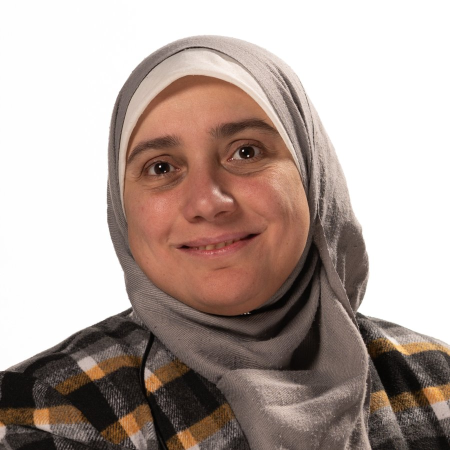
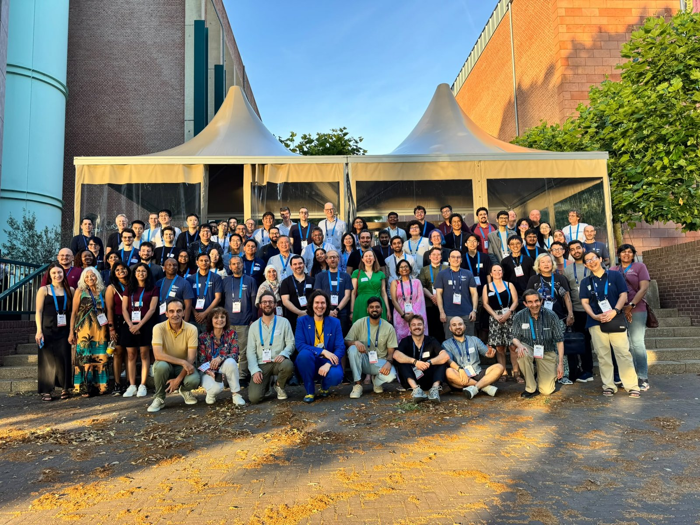

Coordination
Guidance and collective-behaviour methods for multi-agent systems, centred on swarm shepherding: a few control agents guiding the emergent behaviour of a much larger group.
How it works →Distributed and collaborative intelligence
I am Dr Heba El-Fiqi, Senior Lecturer in Artificial Intelligence at UNSW Canberra. I work on distributed and collaborative intelligence for autonomous systems: how individual agents can coordinate, learn, and act reliably under limited compute and partial information.

Two sides of one problem
Guidance and collective-behaviour methods for multi-agent systems, centred on swarm shepherding: a few control agents guiding the emergent behaviour of a much larger group.
How it works →Gated learning architectures that recover and reason over partial, noisy, high-dimensional signals, so each agent can act on what it can actually observe.
How it works →Selected work
Community

I lead the IJCNN Mentoring Program within the IEEE CIS Student and Early Career Mentoring Program, and serve as Vice-Chair of the IEEE CIS Mentoring and Skills Development Sub-Committee, which runs these activities across the Society's flagship conferences. I am also an Academic Editor at PLOS ONE.
Leadership and service →I bring both pillars together in applied autonomy, through funded projects with industry and research partners that move methods toward real-world readiness, including hardware-in-the-loop testing.
Research →News